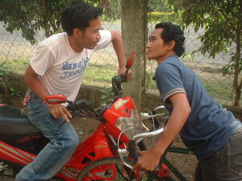

banggà 
/baŋgaʔ/
v.
for someone or something (egbangga, migbangga/imbangga, agent, eg><ø-) to hit someone or something by the body (egbanggaan, imbanggaan/migbanggaan/pigbanggaan, location, eg><an-)
Ka egbanggà iyan ka egsukeung te minsan nekey ne egpatangkaan din. Egkaayun seini ne egtuyuan din wey warè naa su kenad wey warad nekasuwey su manekal ka pegpallahuy wey peggipanew naa.
Kenè kew parani due te kelesadda su kema ke egkabanggaan kew te terak.
Don't come near to the highway for you might be hit by a truck.
Egbanggaan ad e perem te kunterè ku te kuddè din piru nakabantey e ma.
My enemy was about to knock me with his horse but I was alarmed.
Mareet ne kelag ka egbubula su egbanggaan ki te kunterè ta.
Basketball is not nice sport because our opponents will struck us.
Eng. hit, to; collide; crash; knock down; bang into
Ceb. banggas
Online dict status: -
Usage level: L
v.
for someone (egpegbanggeey, migpegbanggeey/impegbanggeey, agent, egpeg><ey-) to hit together the heads of their vehicles for their personal wants or interest (egpegbanggeen, impegbanggè/migpegbanggè/pigpegbanggè, pegbanggeen, patient, egpeg><en-)
Eng. hit, both
Online dict status: -
Usage level: M
Updated by: TME,QDL,QDL
Last updated: 02/Dec/2009
This page last updated: 19/May/2012
Copyright © 2009-2010, Matigsalug Language Christian Association, Inc